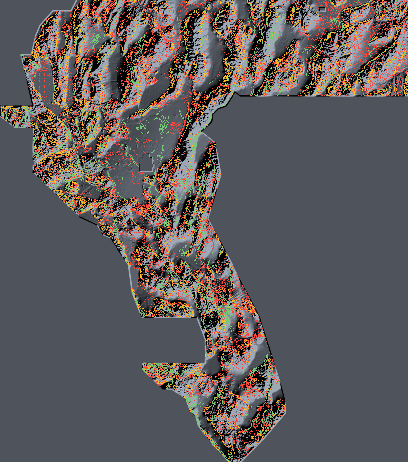

WBGGEMSDOE3 · parallel lane session 2026-10-27 (branch arena/1f0b051d-wbggemsdoe3) ·
main site · run card JSON ·
exactly how to submit
“Owner-reported” = user-supplied submission log, no organizer receipt exists for any of them. “LST LOO” = leave-one-out ledger-tomography projection refit this session on 112 unique restored scored rasters (LOO MAE 0.0251, Spearman 0.907) — a projection, never a score. Uniqueness for focus files is pairwise among the nine (this session's audit); for this candidate it is vs all 122 registry rasters.
| Site | Best historical file (in data/ledger / focus cache) | Owner-reported | LST LOO projection | Dots | Unique? | Decision |
|---|---|---|---|---|---|---|
| GEMSDOE32 | GEMSDOE32.tif | 0.2778 | 0.305 | 37,654 | NO worst 100.0% within 3 px | DO NOT SUBMIT (duplicate family) |
| GEMSDOE36 | GEMSDOE36.tif | 0.2750 | 0.301 | 38,854 | NO worst 97.6% within 3 px | DO NOT SUBMIT (duplicate family) |
| GEMSDOE28 | GEMSDOE28.tif | 0.2710 | 0.294 | 37,660 | NO worst 100.0% within 3 px | DO NOT SUBMIT (duplicate family) |
| GEMSDOE31 | GEMSDOE31.tif | 0.2708 | — | 40,199 | NO worst 100.0% within 3 px | DO NOT SUBMIT (duplicate family) |
| GEMSDOE33 | GEMSDOE33.tif | 0.2632 | 0.288 | 41,865 | NO worst 99.7% within 3 px | DO NOT SUBMIT (duplicate family) |
| GEMSDOE25 | GEMSDOE25.tif | 0.2600 | 0.281 | 44,090 | NO worst 100.0% within 3 px | DO NOT SUBMIT (duplicate family) |
| GEMSDOE30 | GEMSDOE30.tif | 0.2600 | — | 44,090 | NO worst 100.0% within 3 px | DO NOT SUBMIT (duplicate family) |
| GEMSDOE24 | GEMSDOE24.tif | 0.2477 | 0.265 | 60,069 | NO worst 100.0% within 3 px | DO NOT SUBMIT (duplicate family) |
| GEMSDOE27 | GEMSDOE27.tif | 0.2449 | 0.263 | 61,328 | NO worst 98.0% within 3 px | DO NOT SUBMIT (duplicate family) |
| this repo (prev lane) | wbggemsdoe3-skarpline-union-20261027-610acf58-zeros.tif | not submitted | 0.038* | 97,608 | YES vs focus 9 | DO NOT SUBMIT on its 0.428 claim — estimate withdrawn by this audit (§3) |
| this repo (prev lane) | wbggems3-hce1-congruence-…-bc1edfe6-zeros.tif | not submitted | 0.059* | 169,968 | lane-audited | Research only (its own card: projection does not support beating 0.2778) |
| this repo (prev lane) | wbggems3-cspes-edgestab-37654d-…-zeros.tif | not submitted | 0.019* | 37,654 | lane-audited | DO NOT SUBMIT (negative holdout in its own card) |
| this repo (prev lane) | wbggems3-lst1-hybrid-20261026-0a0229da-zeros.tif | not submitted | 0.341* | 32,810 | archived | DO NOT SUBMIT (archived: literal-rule violation; LST number is circular — it was LST-allocated) |
| THIS SESSION | wbg3-dipolehybrid-40000d-20261027-e8535621-zeros.tif | not submitted | 0.092* (lower-bound-shaped; §5) | 40,000 | YES max 67.0% within 3 px vs 122 files | DOWNLOAD ✅ · SUBMIT only as unique-lane entry ⚠️ Estimate ≈ 0.16 (analog median) |
* Full-fit LST projection (not LOO) for unscored files. All nine focus files fail uniqueness against each other (pairwise Jaccard 0.342–1.000; GEMSDOE25 ≡ GEMSDOE30 identical support; ≥86.7% of dots within 3 px in the worst direction of every pair) — resubmitting any of them would be a duplicate, whatever its historical score.
Measured from the pinned bytes this session (not inferred): the B2 mask (37,654 px) is an exact subset of GEMSDOE31's 40,199-dot base and of GEMSDOE30's 44,090-dot mask. Against GEMSDOE31 it removes exactly 2,545 dots, all at catalogue distance 1.414–2.0 px; its nearest retained dot is √5 ≈ 2.236 px from the catalogue. So B2 = the shared dotted H19-5-family network plus a catalogue-proximity trim — plausibly removing mass that sits in the organiser-masked/known-fault neighbourhood and on mis-registered catalogue shoulders, where it can only earn FP. The owner-reported gain over its base is +0.0070 (0.2708 → 0.2778). There is no new detector in B2; the whole 0.2449–0.2778 cluster is one network at different trims/budgets. A causal proof is impossible without the hidden labels and an upload receipt, neither of which exists in this project — the anatomy above is what the bytes establish. Our candidate adopts the √5 px trim (verified: min catalogue distance = 2.236 px).
Its estimator converts SGMC-proxy hit-rate into a leaderboard number. This session measured two fatal counterexamples: (a) the space-filling lattice (owner-reported 0.0904) is “estimated” at 0.399 and was trimmed out of its own fit as an outlier (overall R² = −0.65, LOO RMS 0.096); (b) the SGMC proxy itself as a prediction has hit-rate 1.0 → “estimate” ≈ 1.66, while owner-reported SGMC-off-catalogue submissions score 0.0512 / 0.0492. Density-matched SGMC DTI also ranks the lattice above the champion. The skarpline file remains a legitimate unique research artifact, but 0.428 must not be used for any submission decision; its LST projection is 0.038 and its density-matched proxy is high only because SGMC faults live where its scarps are (bedrock ranges).
Hypothesis. Young normal-fault scarps missing from the Quaternary catalogue are signed lidar dipoles (crest convexity lapneg + base concavity lappos + dominant face polarity) that are strike-coherent over >500 m in low-relief piedmont settings; emitting them as 2.83 px-spaced dots half inside the corroborated H19-5 corridor and half on novel off-network strands recovers faults the catalogue and the champion family missed.
Mechanism. Dequantised USGS-3DEP 2 m lidar aggregate channels -> percentile-rank geomean dipole (lapneg, lappos, max(upface,downface), step) x coh100 x (1-0.5 cross-dominance) -> segment coherence (max directional mean, 4 orientations, +-4 px) -> piedmont setting factor (relief/slope rank penalty) x TIGER road-distance factor x contour factor -> greedy dotted placement (2.83 px inhibition), d_cat>=sqrt(5) px B2 trim, 40,000 dots (pool A d_H19-5<=2 px; pool B off-network and >3 px from champion+skarpline); uniqueness repair vs full registry; binary 1.0 emission, zeros outside footprint.
Named non-fault mimic. Lahontan shoreline/terrace risers and road cut-and-fill benches (mitigated, not eliminated, by cross-dominance, road-distance and along-strike elevation-change factors).
| Experiment | HOLDOUT-DTI (v3.0, fold-legal) | LEDGER-PROJECTION | Uniqueness (worst) | Outcome |
|---|---|---|---|---|
| E1 pure dipole, 40k | 0.0039 [0.002970703696724327, 0.004777527793595706] | 0.059 | 74.2% vs skarpline — FAIL | Bedrock-dipole population; duplicate of skarpline lane |
| E2 + coherence + piedmont + suppressions | 0.0036 [0.0029918935571346455, 0.004211341949635089] | 0.037 | 38.7% (subset) | Unique but strata-empty → frontier diagnostic |
| E3 frontier hybrid (→ final, after repair) | 0.0053 [0.004604587701802335, 0.006104786124286903] | 0.118 | 67.0% vs 122 files | Delivered; pools after repair 15,892 corridor / 24,108 novel |
Other hypotheses generated and ranked before implementation (preregistration): H2 evidence-gated tip
extension, H3 contour-crossing gate (folded into E2 as a soft factor), H4 radiometric-alteration gating,
H5 drainage-deflection corridors (blocked: needs raw USGS 3DEP tiles, unreachable from this sandbox —
free official source named in the preregistration). Full text:
knowledge/preregistration-2026-10-27-session-1f0b051d.md.

Red = this candidate · amber = GEMSDOE32 champion · green = public catalogue (masked in scoring) · grey = detrended-elevation hillshade. 4× downsampled.
| Instrument | Label | This candidate | References |
|---|---|---|---|
| Hide-and-recover, 22,232 withheld positives | HOLDOUT-DTI (GEMSDOE32-HIDE-RECOVER-v3.0) | static read-back 0.0052 [0.004505418405525213, 0.005975265667838887]; fold-legal E3 0.0053 [0.004604587701802335, 0.006104786124286903]; strata-shuffled control 0.0004, paired Δ CI [0.004222562696889646, 0.005714495904671688] (>0) |
champion static 0.0045 · d2.8 static 0.0967 · skarpline static 0.0305 (anti-proxy regime; see §2) |
| Leakage canary (single-field AUC vs withheld segments, n=20,321) | CANARY | worst non-catalogue field d_sgmc AUC₂=0.659 ≤ 0.90 — PASS | lidar fields ≤ 0.578 |
| Density-matched SGMC segments | PROXY-DTI | @8,430: 0.038 · @12,691: 0.046 · @15,672: 0.050 | champion @12,691: 0.062 · GEMSDOE70: 0.084 (proxy also ranks lattice > champion — weak instrument) |
| Ledger tomography (112 scored rasters, refit) | LEDGER-PROJECTION | 0.092 (LOO MAE 0.025 in-family; off-network unidentified → lower-bound-shaped) | champion in-fit 0.303 · λ-optimal unique bound 0.098 |
| Archive-analog frontier (n=21 similar allocations) | ESTIMATE | median 0.155, mean 0.140, range 0.018–0.248 (owner-reported analog scores) | best analog GEMSDOE70 = 0.2478 |
| Organizer receipt | ORGANIZER-CONFIRMED | none — not submitted | none exists for any file in this project |
| Gate | Result |
|---|---|
| G1_canary_le_0.90 | PASS |
| G2_uniqueness_sparse_le_0.70 | PASS |
| G2b_density_spearman_le_0.90 | PASS |
| G3_revised_frontier_allocation | PASS |
| G4_density_matched_proxy_ge_champion@12691 | FAIL |
| G5_holdout_beats_strata_control | PASS |
| G6_saved_byte_validator | PASS |
G4 (density-matched proxy ≥ champion) fails: candidate 0.046 vs champion 0.062 at |G|=12,691. Recorded, not hidden — it is one reason the verdict is negative. The same proxy ranks the 0.0904 lattice above the champion, so it cannot be the sole gate; all three instruments are shown.
| Field | AUC | AUC two-polarity |
|---|---|---|
| lidar_ex_max | 0.561 | 0.561 |
| lidar_ex_mean | 0.547 | 0.547 |
| lidar_step_max | 0.561 | 0.561 |
| lidar_lapneg_max | 0.566 | 0.566 |
| lidar_lappos_max | 0.569 | 0.569 |
| lidar_downface_max | 0.549 | 0.549 |
| lidar_upface_max | 0.559 | 0.559 |
| lidar_cross_max | 0.539 | 0.539 |
| lidar_relief | 0.556 | 0.556 |
| lidar_coh100 | 0.468 | 0.532 |
| lidar_strike | 0.515 | 0.515 |
| along_dz | 0.576 | 0.576 |
| de_log2 | 0.422 | 0.578 |
| de_slope2 | 0.574 | 0.574 |
| road_dist_m | 0.484 | 0.516 |
| d_cat | 0.000 | 1.000 |
| d_h19 | 0.360 | 0.640 |
| d_sgmc | 0.341 | 0.659 |
| Comparator | Dots | 3 px coverage | Our dots within 3 px | Jaccard | Class |
|---|---|---|---|---|---|
| 13GEMSDOE::20261001_r13-lattice-s5_v2_nan-outside | 206,895 | 0.999 | 0.998 | 0.0066 | space-filling (R1 excluded, listed) |
| GEMSDOE67::ovtr-ml-cover-tau3p0-20261012-nan | 167,597 | 0.548 | 0.670 | 0.0081 | sparse |
| GEMSDOE3::pindrop-v4-nodes-20260925T152420Z-f347b70daa | 155,021 | 0.735 | 0.670 | 0.0049 | sparse |
| GEMSDOE3::pindrop-v4-discovery-20260925T152423Z-37f9d5b855 | 155,021 | 0.734 | 0.670 | 0.0061 | sparse |
| GEMSDOE22::h23-b-dti-optimal-emission-10pct-20261002-86176698-nan | 516,738 | 0.534 | 0.670 | 0.0140 | sparse |
| GEMSDOE77::gems85-h85-edti-collar35-skel-r33-20261021-d97b248e-zeros | 201,260 | 0.554 | 0.638 | 0.0069 | sparse |
| GEMSDOE22::h23-a-dti-optimal-emission-6pct-20261002-e2ec4b49-nan | 335,879 | 0.413 | 0.578 | 0.0156 | sparse |
| GEMSDOE23::h30-arrangement-matched-habitat-20261002-0d4e02e8-nan | 91,533 | 0.411 | 0.533 | 0.0114 | sparse |
| 15GEMSDOE::gems-tso1-20260929T005627Z-conj_alteration_mag | 99,999 | 0.457 | 0.478 | 0.0059 | sparse |
| GEMSDOE63::cvarlw-thin-s3p17-54864-20261011T220606Z-c58f60c4-zeros | 54,864 | 0.251 | 0.442 | 0.0104 | sparse |
| hce1_congruence | 169,968 | 0.437 | 0.430 | 0.0063 | sparse |
| 19GEMSDOE::h19-5-powerlaw-budget-multiline-corroborated-20260930-e27054cf-nan | 121,131 | 0.196 | 0.411 | 0.0150 | sparse |
| 12GEMSDOE::r7-nms3-dem10-scarp_0c9199f14e62 | 103,347 | 0.322 | 0.408 | 0.0094 | sparse |
| 12GEMSDOE::r7-nms3-dem10-scarp_0c9199f14e62_allfinite | 103,347 | 0.322 | 0.408 | 0.0094 | sparse |
| 19GEMSDOE::h19-4-multiline-corroborated-openness-thermal-pop-20260930-691e4dfa-nan | 123,779 | 0.204 | 0.406 | 0.0152 | sparse |
| Site | Submission | Owner-reported | Dots | Frac >3 px from champion | Frac off-network |
|---|---|---|---|---|---|
| GEMSDOE70 | gems70-p5-dual-submod300-oof38k-20261020 | 0.2478 | 37,654 | 0.45 | 0.49 |
| GEMSDOE49 | gate_ortho_w0.25-40k-20261006T213721Z-nan | 0.2376 | 40,000 | 0.57 | 0.63 |
| GEMSDOE76 | gems76-ptcf-tiltworm-submod39k-20261021T034000Z-6316481d-zeros | 0.2343 | 39,200 | 0.42 | 0.48 |
| GEMSDOE63 | cvarlw-thin-s3p17-54864-20261011T220606Z-c58f60c4-zeros | 0.2303 | 54,864 | 0.45 | 0.45 |
| GEMSDOE27 | gems27-h29-hydrothermal-piedmont-celf-20261025-511898747886-allfinite | 0.2190 | 37,654 | 0.44 | 0.45 |
| GEMSDOE73 | gems73-h73-mcsc-seamfree-blakely-37654dots-20261021T073716Z-b27ac445-zeros | 0.1917 | 37,654 | 0.51 | 0.51 |
| GEMSDOE82 | gemsdoe82-h82-submodular-punoisyor-20261021T235456Z-fe137199-zeros | 0.1886 | 37,654 | 0.47 | 0.53 |
| GEMSDOE91 | gems91-s17-lftg-20261025T160014Z-7b6bf90844-zeros | 0.1823 | 37,654 | 0.55 | 0.56 |
| GEMSDOE75 | gems75-trlt-radon-loco-ridge-20261021-zeros | 0.1627 | 36,800 | 0.54 | 0.59 |
| GEMSDOE78 | gems78-h78sigx-fuse-b5-44090dots-20261022T021932Z-zeros | 0.1564 | 44,090 | 0.56 | 0.63 |
e85356210200a1342445ad6524bffd3f5d41b65ff8ab7fd30d35ceeabb8fcf54.WBG3 dipole-hybrid: lidar scarp-dipole x segment coherence, piedmont-gated; 40% corridor + 60% novel; d2.83 dotted, B2 trim (123 chars)outside="nan" twin.scripts/restore_session_data.py → scripts/session_audit.py →
scripts/session_experiments.py fields|canary|lst|e1|e2|e3 → scripts/session_finalize.py →
scripts/session_verify.py → scripts/build_session_site.py (this page).
Evidence: evidence/session_1f0b051d_audit.json, evidence/session_1f0b051d_run_card.json,
evidence/session_1f0b051d_verify.json.Generated by scripts/build_session_site.py from evidence JSONs. No organizer-confirmed score
exists for this file. Negative results are deliverables: verdict negative on beating 0.2778.